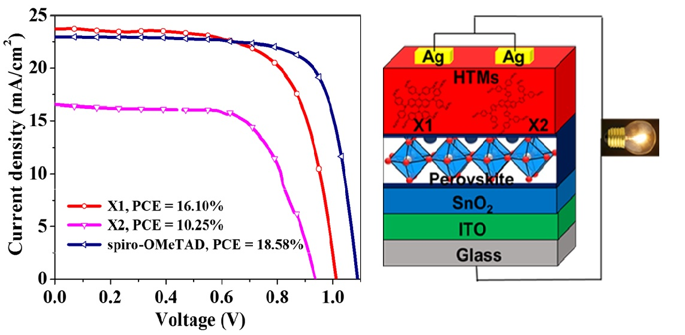

Scholarly article
Effect of Thiophene Insertion on X-Shaped Anthracene-Based Hole-Transporting Materials in Perovskite Solar Cells
Author affiliations and roles
- a1 Department of Chemistry, Chung Yuan Christian University, Zhongli, Taoyuan 320, Taiwan; chandrugood91@gmail.com ROR ↗
- b2 Center for Reliability Sciences and Technologies, Chang Gung University, Guishan, Taoyuan 333, Taiwan; weihao.chiu@gmail.com ROR ↗
- c3 Department of Chemical and Materials Engineering, Chang Gung University, Guishan, Taoyuan 333, Taiwan
- d4 Center for Green Technology, Chang Gung University, Guishan, Taoyuan 333, Taiwan
- e5 Division of Neonatology, Department of Pediatrics, Chang Gung Memorial Hospital, Linkou, Taoyuan 33305, Taiwan ROR ↗
- fChang Gung University of Science and Technology ROR ↗
- g6 Department of Applied Chemistry, Providence University, Taichung 433, Taiwan; jl387555@gmail.com ROR ↗
Polymers, 14, 1580 (2022).
Research topic: Hole-Transporting Materials
Abstract
In this work, two novel tetra-substituted X-shaped molecules X1 and X2 that were constructed with anthracene as the central core and arylamine as the donor groups have been synthesized. The HTMs X1 and X2 were synthesized in two steps from industrially accessible and moderately reasonable beginning reagents. These new HTMs are described in terms of utilization of light absorption, energy level, thermal properties, hole mobility (mu(h)), and film-forming property. The photovoltaic performances of these HTMs were effectively assessed in perovskite solar cells (PSCs). The devices based on these HTMs accomplished an overall efficiency of 16.10% for X1 and 10.25% for X2 under standard conditions (AM 1.5 G and 100 mW cm(-2)). This precise investigation provides another perspective on the use of HTMs in PSCs with various device configurations.
Graphical Abstract
